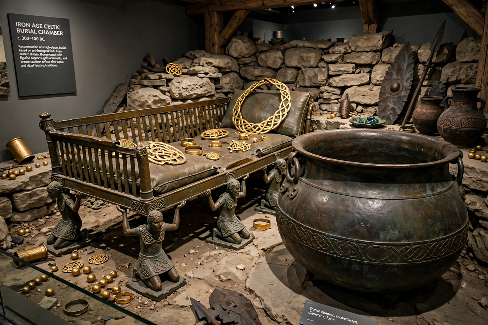

Hochdorf Chieftain's Grave
| Hochdorf Chieftain's Grave | |
|---|---|
| Location | Near Hochdorf an der Enz, Baden-Württemberg, Germany |
| Culture | Hallstatt culture (phase D) |
| Date | c. 530 BC |
| Discovered | 1978 (excavated 1978–1979) |
| Key finds | Bronze couch, Greek cauldron, gold ornaments, four-wheeled wagon |

The Hochdorf Chieftain's Grave is a richly furnished Celtic princely burial of the late Hallstatt culture, dating to about 530 BC, near the village of Hochdorf an der Enz in Baden-Württemberg, Germany. Discovered in 1978 by an amateur archaeologist and excavated in 1978–79 under the direction of Jörg Biel, it is one of the most important Iron Age burials in Europe, remarkable because — unlike most contemporary princely graves — it had not been robbed in antiquity.
The burial
Beneath a mound originally some 60 metres across and 10 metres high, a stone-packed wooden chamber held the body of a man about 40 years old and unusually tall for his era (about 1.87 m). He lay on an extraordinary bronze couch nearly three metres long, supported by eight wheeled female figurines — a unique piece, apparently made locally, with punched decoration showing dancers and chariots. The dead man wore a gold neck-ring, a gold bracelet and brooches, a conical hat of birch bark, and shoes with gold leaf fittings. Analysis of his remains suggested a rich diet and considerable alcohol consumption.
Grave goods
Around him stood the equipment of a feasting aristocrat: a great Greek-made bronze cauldron of about 500 litres capacity, decorated with three lions (one a local replacement), which contained the residue of honey mead; nine drinking horns, the largest holding over five litres; a four-wheeled wagon with horse harness; fishing hooks, a quiver of arrows and grooming implements. The whole assemblage illustrates how Hallstatt chiefs staged power through hospitality, Mediterranean imports and conspicuous craftsmanship.
Interpretation and display
The burial is generally linked to the nearby princely seat on the Hohenasperg. The deceased is often popularly called a "Celtic prince," and parallels are drawn with the Lady of Vix burial in France. The finds are displayed at the Württembergisches Landesmuseum in Stuttgart, and a reconstructed burial mound and Celtic museum stand at Hochdorf itself. The grave's exceptional preservation — including textiles and organic materials — has made it a key source for the art, diet and ritual of the early Celts.
See also: Hallstatt culture · Celts · Galatians